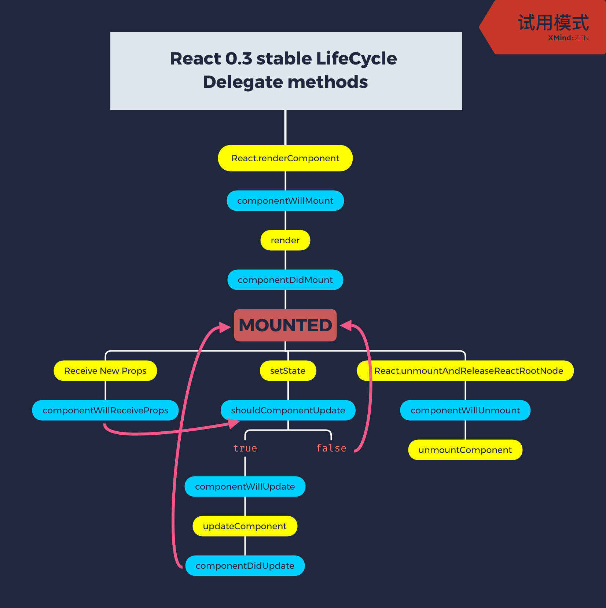

<div ref="streamContainer" class="stream-container">
    <div class="post-list-container post-list-container-shadow">
        <div class="post">
            <div class="post-head-wrapper-text-only"
                 style="background-image: url('')">
                <div class="post-title">
                    React 源码学习（七）：生命周期
                    <div class="post-meta">
                        <time datetime="2019-04-07T10:04:50.000Z" itemprop="datePublished">
                            2019-04-07 10:04
                        </time>&nbsp;
                        
                        
                        <i class="material-icons" style="">folder</i>
                        
                        <a href='/categories/React-源码学习/'>React 源码学习</a>
                        
                        
    
                        
                        
                        <i class="material-icons" style="">label</i>
                        
                        <a href='/tags/React/'>React</a>
                        
                        
                    </div>
                </div>
            </div>
    
            <div class="post-body-wrapper">
                <div class="post-body">
                    <!-- no node -->

<span id="more"></span>

<blockquote>
<p>阅读源码成了今年的学习目标之一，在选择 Vue 和 React 之间，我想先阅读 React 。<br>在考虑到读哪个版本的时候，我想先接触到源码早期的思想可能会更轻松一些，最终我选择阅读 <code>0.3-stable</code> 。<br>那么接下来，我将从几个方面来解读这个版本的源码。</p>
</blockquote>
<ol>
<li><a href="https://zongzi531.com/2019/04/01/LSC-React-01/">React 源码学习（一）：HTML 元素渲染</a></li>
<li><a href="https://zongzi531.com/2019/04/02/LSC-React-02/">React 源码学习（二）：HTML 子元素渲染</a></li>
<li><a href="https://zongzi531.com/2019/04/03/LSC-React-03/">React 源码学习（三）：CSS 样式及 DOM 属性</a></li>
<li><a href="https://zongzi531.com/2019/04/04/LSC-React-04/">React 源码学习（四）：事务机制</a></li>
<li><a href="https://zongzi531.com/2019/04/05/LSC-React-05/">React 源码学习（五）：事件机制</a></li>
<li><a href="https://zongzi531.com/2019/04/06/LSC-React-06/">React 源码学习（六）：组件渲染</a></li>
<li><a href="https://zongzi531.com/2019/04/07/LSC-React-07/">React 源码学习（七）：生命周期</a></li>
<li><a href="https://zongzi531.com/2019/04/08/LSC-React-08/">React 源码学习（八）：组件更新</a></li>
<li><a href="https://zongzi531.com/2019/12/18/LSC-React-09/">React 源码学习（九）：“脱胎换骨”</a></li>
<li><a href="https://zongzi531.com/2019/12/19/LSC-React-10/">React 源码学习（十）：Fiber</a></li>
<li><a href="https://zongzi531.com/2019/12/20/LSC-React-11/">React 源码学习（十一）：Scheduling</a></li>
<li><a href="https://zongzi531.com/2019/12/21/LSC-React-12/">React 源码学习（十二）：Reconciliation</a></li>
</ol>
<p>那么关于生命周期， React 当中生命周期有 2 个。</p>
<p>一个是组件的生命周期 <code>_lifeCycleState</code> ，另一个是复合生命周期 <code>_compositeLifeCycleState</code> 用于复合组件。</p>
<h2 id="组件生命周期"><a href="#组件生命周期" class="headerlink" title="组件生命周期"></a>组件生命周期</h2><p>那么关于组件的生命周期：</p>
<pre class="line-numbers language-javascript"><code class="language-javascript"><span class="token comment" spellcheck="true">// core/ReactComponent.js</span>
<span class="token comment" spellcheck="true">/**
 * Every React component is in one of these life cycles.
 */</span>
<span class="token keyword">var</span> ComponentLifeCycle <span class="token operator">=</span> <span class="token function">keyMirror</span><span class="token punctuation">(</span><span class="token operator">&amp;</span>#<span class="token number">123</span><span class="token punctuation">;</span>
  <span class="token comment" spellcheck="true">/**
   * Mounted components have a DOM node representation and are capable of
   * receiving new props.
   */</span>
  <span class="token comment" spellcheck="true">// 已挂载</span>
  MOUNTED<span class="token punctuation">:</span> <span class="token keyword">null</span><span class="token punctuation">,</span>
  <span class="token comment" spellcheck="true">/**
   * Unmounted components are inactive and cannot receive new props.
   */</span>
  <span class="token comment" spellcheck="true">// 未挂载</span>
  UNMOUNTED<span class="token punctuation">:</span> <span class="token keyword">null</span>
<span class="token operator">&amp;</span>#<span class="token number">125</span><span class="token punctuation">;</span><span class="token punctuation">)</span><span class="token punctuation">;</span>
<span aria-hidden="true" class="line-numbers-rows"><span></span><span></span><span></span><span></span><span></span><span></span><span></span><span></span><span></span><span></span><span></span><span></span><span></span><span></span><span></span><span></span><span></span></span></code></pre>
<p>那么我们来观测到， <code>ReactComponent</code> 和 <code>ReactCompositeComponent</code> 关于 <code>ComponentLifeCycle</code> 的状态变化：</p>
<pre class="line-numbers language-javascript"><code class="language-javascript"><span class="token comment" spellcheck="true">// core/ReactComponent.js</span>
<span class="token keyword">var</span> ReactComponent <span class="token operator">=</span> <span class="token operator">&amp;</span>#<span class="token number">123</span><span class="token punctuation">;</span>
  Mixin<span class="token punctuation">:</span> <span class="token operator">&amp;</span>#<span class="token number">123</span><span class="token punctuation">;</span>
    getDOMNode<span class="token punctuation">:</span> <span class="token keyword">function</span><span class="token punctuation">(</span><span class="token punctuation">)</span> <span class="token operator">&amp;</span>#<span class="token number">123</span><span class="token punctuation">;</span>
      <span class="token comment" spellcheck="true">// 获取 DOM 节点时，组件必须为已挂载</span>
      <span class="token function">invariant</span><span class="token punctuation">(</span>
        <span class="token keyword">this</span><span class="token punctuation">.</span>_lifeCycleState <span class="token operator">===</span> ComponentLifeCycle<span class="token punctuation">.</span>MOUNTED<span class="token punctuation">,</span>
        <span class="token string">'getDOMNode(): A component must be mounted to have a DOM node.'</span>
      <span class="token punctuation">)</span><span class="token punctuation">;</span>
    <span class="token operator">&amp;</span>#<span class="token number">125</span><span class="token punctuation">;</span><span class="token punctuation">,</span>
    construct<span class="token punctuation">:</span> <span class="token keyword">function</span><span class="token punctuation">(</span>initialProps<span class="token punctuation">,</span> children<span class="token punctuation">)</span> <span class="token operator">&amp;</span>#<span class="token number">123</span><span class="token punctuation">;</span>
      <span class="token comment" spellcheck="true">// All components start unmounted.</span>
      <span class="token comment" spellcheck="true">// 实例化时，组件为未挂载</span>
      <span class="token keyword">this</span><span class="token punctuation">.</span>_lifeCycleState <span class="token operator">=</span> ComponentLifeCycle<span class="token punctuation">.</span>UNMOUNTED<span class="token punctuation">;</span>
    <span class="token operator">&amp;</span>#<span class="token number">125</span><span class="token punctuation">;</span><span class="token punctuation">,</span>
    mountComponent<span class="token punctuation">:</span> <span class="token keyword">function</span><span class="token punctuation">(</span>rootID<span class="token punctuation">,</span> transaction<span class="token punctuation">)</span> <span class="token operator">&amp;</span>#<span class="token number">123</span><span class="token punctuation">;</span>
      <span class="token comment" spellcheck="true">// 挂载组件前检查组件应为未挂载</span>
      <span class="token function">invariant</span><span class="token punctuation">(</span>
        <span class="token keyword">this</span><span class="token punctuation">.</span>_lifeCycleState <span class="token operator">===</span> ComponentLifeCycle<span class="token punctuation">.</span>UNMOUNTED<span class="token punctuation">,</span>
        <span class="token string">'mountComponent(%s, ...): Can only mount an unmounted component.'</span><span class="token punctuation">,</span>
        rootID
      <span class="token punctuation">)</span><span class="token punctuation">;</span>
      <span class="token comment" spellcheck="true">// 挂载完后更新组件生命周期状态</span>
      <span class="token keyword">this</span><span class="token punctuation">.</span>_lifeCycleState <span class="token operator">=</span> ComponentLifeCycle<span class="token punctuation">.</span>MOUNTED<span class="token punctuation">;</span>
      <span class="token comment" spellcheck="true">// Effectively: return '';</span>
    <span class="token operator">&amp;</span>#<span class="token number">125</span><span class="token punctuation">;</span><span class="token punctuation">,</span>
    unmountComponent<span class="token punctuation">:</span> <span class="token keyword">function</span><span class="token punctuation">(</span><span class="token punctuation">)</span> <span class="token operator">&amp;</span>#<span class="token number">123</span><span class="token punctuation">;</span>
      <span class="token comment" spellcheck="true">// 卸载前检查组件应为已挂载</span>
      <span class="token function">invariant</span><span class="token punctuation">(</span>
        <span class="token keyword">this</span><span class="token punctuation">.</span>_lifeCycleState <span class="token operator">===</span> ComponentLifeCycle<span class="token punctuation">.</span>MOUNTED<span class="token punctuation">,</span>
        <span class="token string">'unmountComponent(): Can only unmount a mounted component.'</span>
      <span class="token punctuation">)</span><span class="token punctuation">;</span>
      <span class="token comment" spellcheck="true">// 卸载完后更新组件生命周期状态</span>
      <span class="token keyword">this</span><span class="token punctuation">.</span>_lifeCycleState <span class="token operator">=</span> ComponentLifeCycle<span class="token punctuation">.</span>UNMOUNTED<span class="token punctuation">;</span>
    <span class="token operator">&amp;</span>#<span class="token number">125</span><span class="token punctuation">;</span><span class="token punctuation">,</span>
    receiveProps<span class="token punctuation">:</span> <span class="token keyword">function</span><span class="token punctuation">(</span>nextProps<span class="token punctuation">,</span> transaction<span class="token punctuation">)</span> <span class="token operator">&amp;</span>#<span class="token number">123</span><span class="token punctuation">;</span>
      <span class="token comment" spellcheck="true">// 更新 props 时，组件生命周期应为已挂载</span>
      <span class="token function">invariant</span><span class="token punctuation">(</span>
        <span class="token keyword">this</span><span class="token punctuation">.</span>_lifeCycleState <span class="token operator">===</span> ComponentLifeCycle<span class="token punctuation">.</span>MOUNTED<span class="token punctuation">,</span>
        <span class="token string">'receiveProps(...): Can only update a mounted component.'</span>
      <span class="token punctuation">)</span><span class="token punctuation">;</span>
    <span class="token operator">&amp;</span>#<span class="token number">125</span><span class="token punctuation">;</span><span class="token punctuation">,</span>
  <span class="token operator">&amp;</span>#<span class="token number">125</span><span class="token punctuation">;</span>
<span class="token operator">&amp;</span>#<span class="token number">125</span><span class="token punctuation">;</span><span class="token punctuation">;</span>
<span aria-hidden="true" class="line-numbers-rows"><span></span><span></span><span></span><span></span><span></span><span></span><span></span><span></span><span></span><span></span><span></span><span></span><span></span><span></span><span></span><span></span><span></span><span></span><span></span><span></span><span></span><span></span><span></span><span></span><span></span><span></span><span></span><span></span><span></span><span></span><span></span><span></span><span></span><span></span><span></span><span></span><span></span><span></span><span></span><span></span><span></span><span></span><span></span><span></span></span></code></pre>
<pre class="line-numbers language-javascript"><code class="language-javascript"><span class="token comment" spellcheck="true">// core/ReactCompositeComponent.js</span>
<span class="token keyword">var</span> ReactCompositeComponentMixin <span class="token operator">=</span> <span class="token operator">&amp;</span>#<span class="token number">123</span><span class="token punctuation">;</span>
  mountComponent<span class="token punctuation">:</span> <span class="token keyword">function</span><span class="token punctuation">(</span>rootID<span class="token punctuation">,</span> transaction<span class="token punctuation">)</span> <span class="token operator">&amp;</span>#<span class="token number">123</span><span class="token punctuation">;</span>
    ReactComponent<span class="token punctuation">.</span>Mixin<span class="token punctuation">.</span>mountComponent<span class="token punctuation">.</span><span class="token function">call</span><span class="token punctuation">(</span><span class="token keyword">this</span><span class="token punctuation">,</span> rootID<span class="token punctuation">,</span> transaction<span class="token punctuation">)</span><span class="token punctuation">;</span>

    <span class="token comment" spellcheck="true">// Unset `this._lifeCycleState` until after this method is finished.</span>
    <span class="token keyword">this</span><span class="token punctuation">.</span>_lifeCycleState <span class="token operator">=</span> ReactComponent<span class="token punctuation">.</span>LifeCycle<span class="token punctuation">.</span>UNMOUNTED<span class="token punctuation">;</span>
    <span class="token comment" spellcheck="true">// ...</span>
    <span class="token keyword">this</span><span class="token punctuation">.</span>_lifeCycleState <span class="token operator">=</span> ReactComponent<span class="token punctuation">.</span>LifeCycle<span class="token punctuation">.</span>MOUNTED<span class="token punctuation">;</span>
  <span class="token operator">&amp;</span>#<span class="token number">125</span><span class="token punctuation">;</span><span class="token punctuation">,</span>
  replaceState<span class="token punctuation">:</span> <span class="token keyword">function</span><span class="token punctuation">(</span>completeState<span class="token punctuation">)</span> <span class="token operator">&amp;</span>#<span class="token number">123</span><span class="token punctuation">;</span>
    <span class="token keyword">var</span> compositeLifeCycleState <span class="token operator">=</span> <span class="token keyword">this</span><span class="token punctuation">.</span>_compositeLifeCycleState<span class="token punctuation">;</span>
    <span class="token comment" spellcheck="true">// 更新 state 时，组件生命周期必须为已挂载，或者复合组件生命周期为挂载中</span>
    <span class="token function">invariant</span><span class="token punctuation">(</span>
      <span class="token keyword">this</span><span class="token punctuation">.</span>_lifeCycleState <span class="token operator">===</span> ReactComponent<span class="token punctuation">.</span>LifeCycle<span class="token punctuation">.</span>MOUNTED <span class="token operator">||</span>
      compositeLifeCycleState <span class="token operator">===</span> CompositeLifeCycle<span class="token punctuation">.</span>MOUNTING<span class="token punctuation">,</span>
      <span class="token string">'replaceState(...): Can only update a mounted (or mounting) component.'</span>
    <span class="token punctuation">)</span><span class="token punctuation">;</span>
  <span class="token operator">&amp;</span>#<span class="token number">125</span><span class="token punctuation">;</span><span class="token punctuation">,</span>
  _bindAutoBindMethod<span class="token punctuation">:</span> <span class="token keyword">function</span><span class="token punctuation">(</span>method<span class="token punctuation">)</span> <span class="token operator">&amp;</span>#<span class="token number">123</span><span class="token punctuation">;</span>
    <span class="token keyword">function</span> <span class="token function">autoBound</span><span class="token punctuation">(</span>a<span class="token punctuation">,</span> b<span class="token punctuation">,</span> c<span class="token punctuation">,</span> d<span class="token punctuation">,</span> e<span class="token punctuation">,</span> tooMany<span class="token punctuation">)</span> <span class="token operator">&amp;</span>#<span class="token number">123</span><span class="token punctuation">;</span>
      <span class="token comment" spellcheck="true">// 使用绑定上下文的方法时，组件生命周期必须为已挂载</span>
      <span class="token keyword">if</span> <span class="token punctuation">(</span>component<span class="token punctuation">.</span>_lifeCycleState <span class="token operator">===</span> ReactComponent<span class="token punctuation">.</span>LifeCycle<span class="token punctuation">.</span>MOUNTED<span class="token punctuation">)</span> <span class="token operator">&amp;</span>#<span class="token number">123</span><span class="token punctuation">;</span>
        <span class="token keyword">return</span> method<span class="token punctuation">.</span><span class="token function">call</span><span class="token punctuation">(</span>component<span class="token punctuation">,</span> a<span class="token punctuation">,</span> b<span class="token punctuation">,</span> c<span class="token punctuation">,</span> d<span class="token punctuation">,</span> e<span class="token punctuation">)</span><span class="token punctuation">;</span>
      <span class="token operator">&amp;</span>#<span class="token number">125</span><span class="token punctuation">;</span>
    <span class="token operator">&amp;</span>#<span class="token number">125</span><span class="token punctuation">;</span>
  <span class="token operator">&amp;</span>#<span class="token number">125</span><span class="token punctuation">;</span>
<span class="token operator">&amp;</span>#<span class="token number">125</span><span class="token punctuation">;</span><span class="token punctuation">;</span>
<span aria-hidden="true" class="line-numbers-rows"><span></span><span></span><span></span><span></span><span></span><span></span><span></span><span></span><span></span><span></span><span></span><span></span><span></span><span></span><span></span><span></span><span></span><span></span><span></span><span></span><span></span><span></span><span></span><span></span><span></span><span></span><span></span><span></span></span></code></pre>
<h2 id="复合组件生命周期"><a href="#复合组件生命周期" class="headerlink" title="复合组件生命周期"></a>复合组件生命周期</h2><p>那么接下来，我们来看看复合生命周期以及其状态变化：</p>
<pre class="line-numbers language-javascript"><code class="language-javascript"><span class="token comment" spellcheck="true">// core/ReactCompositeComponent.js</span>
<span class="token comment" spellcheck="true">/**
 * `ReactCompositeComponent` maintains an auxiliary life cycle state in
 * `this._compositeLifeCycleState` (which can be null).
 *
 * This is different from the life cycle state maintained by `ReactComponent` in
 * `this._lifeCycleState`.
 */</span>
<span class="token keyword">var</span> CompositeLifeCycle <span class="token operator">=</span> <span class="token function">keyMirror</span><span class="token punctuation">(</span><span class="token operator">&amp;</span>#<span class="token number">123</span><span class="token punctuation">;</span>
  <span class="token comment" spellcheck="true">/**
   * Components in the process of being mounted respond to state changes
   * differently.
   */</span>
  <span class="token comment" spellcheck="true">// 挂载中</span>
  MOUNTING<span class="token punctuation">:</span> <span class="token keyword">null</span><span class="token punctuation">,</span>
  <span class="token comment" spellcheck="true">/**
   * Components in the process of being unmounted are guarded against state
   * changes.
   */</span>
  <span class="token comment" spellcheck="true">// 卸载中</span>
  UNMOUNTING<span class="token punctuation">:</span> <span class="token keyword">null</span><span class="token punctuation">,</span>
  <span class="token comment" spellcheck="true">/**
   * Components that are mounted and receiving new props respond to state
   * changes differently.
   */</span>
  <span class="token comment" spellcheck="true">// 更新 props</span>
  RECEIVING_PROPS<span class="token punctuation">:</span> <span class="token keyword">null</span><span class="token punctuation">,</span>
  <span class="token comment" spellcheck="true">/**
   * Components that are mounted and receiving new state are guarded against
   * additional state changes.
   */</span>
  <span class="token comment" spellcheck="true">// 更新 state</span>
  RECEIVING_STATE<span class="token punctuation">:</span> <span class="token keyword">null</span>
<span class="token operator">&amp;</span>#<span class="token number">125</span><span class="token punctuation">;</span><span class="token punctuation">)</span><span class="token punctuation">;</span>

<span class="token keyword">var</span> ReactCompositeComponentMixin <span class="token operator">=</span> <span class="token operator">&amp;</span>#<span class="token number">123</span><span class="token punctuation">;</span>
  construct<span class="token punctuation">:</span> <span class="token keyword">function</span><span class="token punctuation">(</span>initialProps<span class="token punctuation">,</span> children<span class="token punctuation">)</span> <span class="token operator">&amp;</span>#<span class="token number">123</span><span class="token punctuation">;</span>
    <span class="token comment" spellcheck="true">// 实例化时置空复合生命周期</span>
    <span class="token keyword">this</span><span class="token punctuation">.</span>_compositeLifeCycleState <span class="token operator">=</span> <span class="token keyword">null</span><span class="token punctuation">;</span>
  <span class="token operator">&amp;</span>#<span class="token number">125</span><span class="token punctuation">;</span><span class="token punctuation">,</span>
  mountComponent<span class="token punctuation">:</span> <span class="token keyword">function</span><span class="token punctuation">(</span>rootID<span class="token punctuation">,</span> transaction<span class="token punctuation">)</span> <span class="token operator">&amp;</span>#<span class="token number">123</span><span class="token punctuation">;</span>
    <span class="token comment" spellcheck="true">// 挂载前设置复合生命周期为挂载中</span>
    <span class="token keyword">this</span><span class="token punctuation">.</span>_compositeLifeCycleState <span class="token operator">=</span> CompositeLifeCycle<span class="token punctuation">.</span>MOUNTING<span class="token punctuation">;</span>
    <span class="token comment" spellcheck="true">// 挂载完成后置空复合生命周期</span>
    <span class="token comment" spellcheck="true">// Done with mounting, `setState` will now trigger UI changes.</span>
    <span class="token keyword">this</span><span class="token punctuation">.</span>_compositeLifeCycleState <span class="token operator">=</span> <span class="token keyword">null</span><span class="token punctuation">;</span>
  <span class="token operator">&amp;</span>#<span class="token number">125</span><span class="token punctuation">;</span><span class="token punctuation">,</span>
  unmountComponent<span class="token punctuation">:</span> <span class="token keyword">function</span><span class="token punctuation">(</span><span class="token punctuation">)</span> <span class="token operator">&amp;</span>#<span class="token number">123</span><span class="token punctuation">;</span>
    <span class="token comment" spellcheck="true">// 卸载开始时设置复合生命周期为卸载中</span>
    <span class="token keyword">this</span><span class="token punctuation">.</span>_compositeLifeCycleState <span class="token operator">=</span> CompositeLifeCycle<span class="token punctuation">.</span>UNMOUNTING<span class="token punctuation">;</span>
    <span class="token keyword">if</span> <span class="token punctuation">(</span><span class="token keyword">this</span><span class="token punctuation">.</span>componentWillUnmount<span class="token punctuation">)</span> <span class="token operator">&amp;</span>#<span class="token number">123</span><span class="token punctuation">;</span>
      <span class="token keyword">this</span><span class="token punctuation">.</span><span class="token function">componentWillUnmount</span><span class="token punctuation">(</span><span class="token punctuation">)</span><span class="token punctuation">;</span>
    <span class="token operator">&amp;</span>#<span class="token number">125</span><span class="token punctuation">;</span>
    <span class="token comment" spellcheck="true">// 经过生命周期函数 componentWillUnmount 后，置空复合生命周期</span>
    <span class="token keyword">this</span><span class="token punctuation">.</span>_compositeLifeCycleState <span class="token operator">=</span> <span class="token keyword">null</span><span class="token punctuation">;</span>
  <span class="token operator">&amp;</span>#<span class="token number">125</span><span class="token punctuation">;</span><span class="token punctuation">,</span>
  receiveProps<span class="token punctuation">:</span> <span class="token keyword">function</span><span class="token punctuation">(</span>nextProps<span class="token punctuation">,</span> transaction<span class="token punctuation">)</span> <span class="token operator">&amp;</span>#<span class="token number">123</span><span class="token punctuation">;</span>
    <span class="token comment" spellcheck="true">// 更新 props 时设置复合生命周期为更新 props</span>
    <span class="token keyword">this</span><span class="token punctuation">.</span>_compositeLifeCycleState <span class="token operator">=</span> CompositeLifeCycle<span class="token punctuation">.</span>RECEIVING_PROPS<span class="token punctuation">;</span>
    <span class="token keyword">if</span> <span class="token punctuation">(</span><span class="token keyword">this</span><span class="token punctuation">.</span>componentWillReceiveProps<span class="token punctuation">)</span> <span class="token operator">&amp;</span>#<span class="token number">123</span><span class="token punctuation">;</span>
      <span class="token keyword">this</span><span class="token punctuation">.</span><span class="token function">componentWillReceiveProps</span><span class="token punctuation">(</span>nextProps<span class="token punctuation">,</span> transaction<span class="token punctuation">)</span><span class="token punctuation">;</span>
    <span class="token operator">&amp;</span>#<span class="token number">125</span><span class="token punctuation">;</span>
    <span class="token comment" spellcheck="true">// 执行生命周期函数 componentWillReceiveProps 后，设置复合生命周期为更新 state</span>
    <span class="token keyword">this</span><span class="token punctuation">.</span>_compositeLifeCycleState <span class="token operator">=</span> CompositeLifeCycle<span class="token punctuation">.</span>RECEIVING_STATE<span class="token punctuation">;</span>
    <span class="token comment" spellcheck="true">// ...</span>
    <span class="token comment" spellcheck="true">// 操作 state 更新相关后，置空复合生命周期</span>
    <span class="token keyword">this</span><span class="token punctuation">.</span>_compositeLifeCycleState <span class="token operator">=</span> <span class="token keyword">null</span><span class="token punctuation">;</span>
  <span class="token operator">&amp;</span>#<span class="token number">125</span><span class="token punctuation">;</span><span class="token punctuation">,</span>
  replaceState<span class="token punctuation">:</span> <span class="token keyword">function</span><span class="token punctuation">(</span>completeState<span class="token punctuation">)</span> <span class="token operator">&amp;</span>#<span class="token number">123</span><span class="token punctuation">;</span>
    <span class="token comment" spellcheck="true">// 更新 state</span>
    <span class="token keyword">var</span> compositeLifeCycleState <span class="token operator">=</span> <span class="token keyword">this</span><span class="token punctuation">.</span>_compositeLifeCycleState<span class="token punctuation">;</span>
    <span class="token comment" spellcheck="true">// 仅限生命周期为挂载中或者复合生命周期为挂载中可以更新 state</span>
    <span class="token function">invariant</span><span class="token punctuation">(</span>
      <span class="token keyword">this</span><span class="token punctuation">.</span>_lifeCycleState <span class="token operator">===</span> ReactComponent<span class="token punctuation">.</span>LifeCycle<span class="token punctuation">.</span>MOUNTED <span class="token operator">||</span>
      compositeLifeCycleState <span class="token operator">===</span> CompositeLifeCycle<span class="token punctuation">.</span>MOUNTING<span class="token punctuation">,</span>
      <span class="token string">'replaceState(...): Can only update a mounted (or mounting) component.'</span>
    <span class="token punctuation">)</span><span class="token punctuation">;</span>
    <span class="token comment" spellcheck="true">// 仅限复合生命周期不为更新 state 或者不为卸载中</span>
    <span class="token function">invariant</span><span class="token punctuation">(</span>
      compositeLifeCycleState <span class="token operator">!==</span> CompositeLifeCycle<span class="token punctuation">.</span>RECEIVING_STATE <span class="token operator">&amp;&amp;</span>
      compositeLifeCycleState <span class="token operator">!==</span> CompositeLifeCycle<span class="token punctuation">.</span>UNMOUNTING<span class="token punctuation">,</span>
      <span class="token string">'replaceState(...): Cannot update while unmounting component or during '</span> <span class="token operator">+</span>
      <span class="token string">'an existing state transition (such as within `render`).'</span>
    <span class="token punctuation">)</span><span class="token punctuation">;</span>

    <span class="token keyword">this</span><span class="token punctuation">.</span>_pendingState <span class="token operator">=</span> completeState<span class="token punctuation">;</span>

    <span class="token comment" spellcheck="true">// Do not trigger a state transition if we are in the middle of mounting or</span>
    <span class="token comment" spellcheck="true">// receiving props because both of those will already be doing this.</span>
    <span class="token comment" spellcheck="true">// 如果我们正在安装或接收道具，请不要触发状态转换，因为这两个道具都已经在进行此操作了。</span>
    <span class="token comment" spellcheck="true">// 仅限复合生命周期不为挂载中 或者不为更新 props</span>
    <span class="token keyword">if</span> <span class="token punctuation">(</span>compositeLifeCycleState <span class="token operator">!==</span> CompositeLifeCycle<span class="token punctuation">.</span>MOUNTING <span class="token operator">&amp;&amp;</span>
        compositeLifeCycleState <span class="token operator">!==</span> CompositeLifeCycle<span class="token punctuation">.</span>RECEIVING_PROPS<span class="token punctuation">)</span> <span class="token operator">&amp;</span>#<span class="token number">123</span><span class="token punctuation">;</span>
      <span class="token comment" spellcheck="true">// 更新复合生命周期为更新 state</span>
      <span class="token keyword">this</span><span class="token punctuation">.</span>_compositeLifeCycleState <span class="token operator">=</span> CompositeLifeCycle<span class="token punctuation">.</span>RECEIVING_STATE<span class="token punctuation">;</span>

      <span class="token comment" spellcheck="true">// ... 执行更新相关操作</span>
      <span class="token comment" spellcheck="true">// 置空复合生命周期</span>
      <span class="token keyword">this</span><span class="token punctuation">.</span>_compositeLifeCycleState <span class="token operator">=</span> <span class="token keyword">null</span><span class="token punctuation">;</span>
    <span class="token operator">&amp;</span>#<span class="token number">125</span><span class="token punctuation">;</span>
  <span class="token operator">&amp;</span>#<span class="token number">125</span><span class="token punctuation">;</span><span class="token punctuation">,</span>
<span class="token operator">&amp;</span>#<span class="token number">125</span><span class="token punctuation">;</span><span class="token punctuation">;</span>
<span aria-hidden="true" class="line-numbers-rows"><span></span><span></span><span></span><span></span><span></span><span></span><span></span><span></span><span></span><span></span><span></span><span></span><span></span><span></span><span></span><span></span><span></span><span></span><span></span><span></span><span></span><span></span><span></span><span></span><span></span><span></span><span></span><span></span><span></span><span></span><span></span><span></span><span></span><span></span><span></span><span></span><span></span><span></span><span></span><span></span><span></span><span></span><span></span><span></span><span></span><span></span><span></span><span></span><span></span><span></span><span></span><span></span><span></span><span></span><span></span><span></span><span></span><span></span><span></span><span></span><span></span><span></span><span></span><span></span><span></span><span></span><span></span><span></span><span></span><span></span><span></span><span></span><span></span><span></span><span></span><span></span><span></span><span></span><span></span><span></span><span></span><span></span><span></span><span></span><span></span><span></span><span></span><span></span><span></span><span></span><span></span><span></span><span></span><span></span><span></span><span></span><span></span><span></span><span></span><span></span><span></span><span></span></span></code></pre>
<h2 id="生命周期函数方法"><a href="#生命周期函数方法" class="headerlink" title="生命周期函数方法"></a>生命周期函数方法</h2><p>那么到此，实现生命周期功能。那么让我们来看看那些生命周期的钩子都在哪里：</p>
<pre class="line-numbers language-javascript"><code class="language-javascript"><span class="token comment" spellcheck="true">// core/ReactCompositeComponent.js</span>
<span class="token keyword">var</span> ReactCompositeComponentInterface <span class="token operator">=</span> <span class="token operator">&amp;</span>#<span class="token number">123</span><span class="token punctuation">;</span>
  mixins<span class="token punctuation">:</span> SpecPolicy<span class="token punctuation">.</span>DEFINE_MANY<span class="token punctuation">,</span>
  props<span class="token punctuation">:</span> SpecPolicy<span class="token punctuation">.</span>DEFINE_ONCE<span class="token punctuation">,</span>
  getInitialState<span class="token punctuation">:</span> SpecPolicy<span class="token punctuation">.</span>DEFINE_ONCE<span class="token punctuation">,</span>
  render<span class="token punctuation">:</span> SpecPolicy<span class="token punctuation">.</span>DEFINE_ONCE<span class="token punctuation">,</span>
  <span class="token comment" spellcheck="true">// ==== Delegate methods ====</span>
  <span class="token comment" spellcheck="true">// **一下内容为 Google 翻译**</span>
  <span class="token comment" spellcheck="true">// 最初创建组件并即将安装时调用。 这可能有副作用，但必须在 `componentWillUnmount` 中清除此方法创建的任何外部订阅或数据。</span>
  componentWillMount<span class="token punctuation">:</span> SpecPolicy<span class="token punctuation">.</span>DEFINE_MANY<span class="token punctuation">,</span>
  <span class="token comment" spellcheck="true">// 在组件已装入并具有DOM表示形式时调用。 但是，无法保证DOM节点位于文档中。 在第一次装入（初始化和渲染）组件时，将此作为操作DOM的机会。</span>
  componentDidMount<span class="token punctuation">:</span> SpecPolicy<span class="token punctuation">.</span>DEFINE_MANY<span class="token punctuation">,</span>
  <span class="token comment" spellcheck="true">// 在组件接收新道具之前调用。 使用此作为通过使用 `this.setState` 更新状态来对prop转换作出反应的机会。 目前的道具是通过 `this.props` 访问的。</span>
  <span class="token comment" spellcheck="true">// 注意：没有等效的 `componentWillReceiveState` 。传入的道具转换可能会导致状态改变，但情况恰恰相反。如果你需要它，你可能正在寻找 `componentWillUpdate` 。</span>
  componentWillReceiveProps<span class="token punctuation">:</span> SpecPolicy<span class="token punctuation">.</span>DEFINE_MANY<span class="token punctuation">,</span>
  <span class="token comment" spellcheck="true">// 在决定是否应该因接收新的道具和状态而更新组件时调用。 当您确定转换到新的道具和状态不需要更新组件时，可以将此作为 `return false` 的机会。</span>
  shouldComponentUpdate<span class="token punctuation">:</span> SpecPolicy<span class="token punctuation">.</span>DEFINE_ONCE<span class="token punctuation">,</span>
  <span class="token comment" spellcheck="true">// 由于从 `this.props` 和 `this.state` 转换为 `nextProps` 和 `nextState` 而导致组件即将更新时调用。使用此作为在更新发生之前执行准备的机会。</span>
  <span class="token comment" spellcheck="true">// 注意：您**不能**在此方法中使用 `this.setState()`  。</span>
  componentWillUpdate<span class="token punctuation">:</span> SpecPolicy<span class="token punctuation">.</span>DEFINE_MANY<span class="token punctuation">,</span>
  <span class="token comment" spellcheck="true">// 更新组件的DOM表示时调用。 将此作为在更新组件时对DOM进行操作的机会。</span>
  componentDidUpdate<span class="token punctuation">:</span> SpecPolicy<span class="token punctuation">.</span>DEFINE_MANY<span class="token punctuation">,</span>
  <span class="token comment" spellcheck="true">// 当组件即将从其父组件中删除并销毁其DOM表示时调用。 使用此作为释放任何外部资源的机会。 注意：没有 `componentDidUnmount`  ，因为您的组件将被该点销毁。</span>
  componentWillUnmount<span class="token punctuation">:</span> SpecPolicy<span class="token punctuation">.</span>DEFINE_MANY<span class="token punctuation">,</span>
  <span class="token comment" spellcheck="true">// 到此</span>
  updateComponent<span class="token punctuation">:</span> SpecPolicy<span class="token punctuation">.</span>OVERRIDE_BASE
<span class="token operator">&amp;</span>#<span class="token number">125</span><span class="token punctuation">;</span><span class="token punctuation">;</span>
<span aria-hidden="true" class="line-numbers-rows"><span></span><span></span><span></span><span></span><span></span><span></span><span></span><span></span><span></span><span></span><span></span><span></span><span></span><span></span><span></span><span></span><span></span><span></span><span></span><span></span><span></span><span></span><span></span><span></span><span></span><span></span><span></span></span></code></pre>
<hr>
<h2 id="生命周期图"><a href="#生命周期图" class="headerlink" title="生命周期图"></a>生命周期图</h2><p>来看一下生命周期图：</p>
<p></p>

                </div>
            </div>

            
            
            
    
            
    
            
        </div>
    </div>
    
</div>


